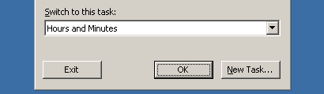

Hours and Minutes Tour
When you start Hours and Minutes it will ask you for what task to use. Tasks are userdefined items, such as "Blue Project" or "Business Meeting".

Setup tasks by clicking the "New Task" button, or simply select a task from the list.